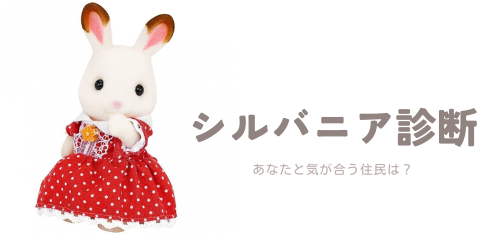

TOPへ戻る
Q1. あなたはアウトドアな方ですか？インドアな方ですか？(1つだけ選択)
TOPへ戻る
Q2. あなたはアイデアマンですか？よく考える方ですか？(1つだけ選択)
TOPへ戻る
Q3. あなたは料理が好きですか？自然が好きですか？(1つだけ選択)
TOPへ戻る
Q4. あなたは現実的ですか？夢見がちですか？(1つだけ選択)


TOPへ戻る

あなたは、シナモンウサギのお兄さん ウィリアム・シナモン に似ています
ショコラウサギのお姉さんとお付き合いをしている。優しいロマンチストで、お姉さんにあげるためにバラを育てたことも。

TOPへ戻る

あなたは、ショコラウサギの女の子 フレア・チョコレート に似ています
好奇心旺盛なやさしい女の子。森のみんなと色んなところに出かけては、スケッチブックに絵を残している。


TOPへ戻る

あなたは、 メイプルネコのお母さん ジョージーナ・メイプルに似ています
大評判のジェラートショップの店長。アイディアマンで村のみんなから頼られることも多い。


TOPへ戻る

あなたは、 ショコラウサギのおじいさん リース・チョコレートに似ています
海の近くのおうちに住むおしどり夫婦。クルーズボートの船長さんで、孫たちに色んな景色を見せてあげたい。
TOPへ戻る

あなたは、 ショコラウサギのお父さん フレイジャー・チョコレートに似ています
パンを焼くことが趣味。村の子供たちはおやつにパンをもらいながら、いろいろ話を聞いてもらっている。